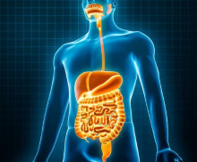

Santé Globale : Comprendre et Prévenir les Maladies les Plus Courantes
{kind=link}
Dans un monde où les maladies chroniques et infectieuses affectent de plus en plus de personnes, il est essentiel de comprendre les différents maux qui touchent notre santé. Des maladies cardiovasculaires aux infections respiratoires, en passant par le cancer, le diabète, les troubles digestifs ou encore les maladies infectieuses, les complications néonatales, chaque condition a un impact significatif sur la qualité de la vie. Ce site est dédié à vous fournir des informations claires et fiables sur ces pathologies, incluant également des affections plus spécifiques telles que la sinusite, les hémorroïdes, les hernies, l'acné et la maladie d'Alzheimer. Ensemble, découvrons les meilleures approches pour les prévenir, les reconnaître et les traiter.
1.Les maladies cardiovasculaires
Elles regroupent un ensemble de troubles qui affectent le coeur et les vaisseaux sanguins, constituant aujourd'hui
l'une des principales causes de décès dans le monde. Selon les données de l'OMS, les maladies cardiovasculaires
sont responsables de près de 18 millions de décès chaque année. Soit environ 32% de l'ensemble des décès dans le monde,
parmis ces décès environ 85% sont dus à des crises cardiaques et des accidents vasculaires célébraux (AVC)
 .
Ce groupe de maladie comprend des affections telles que les crises cardiaques, les accidents vasculaires célébraux (AVC),
l'hypertension, ainsi que des maladies des artères coronaires et les arythmies.
.
Ce groupe de maladie comprend des affections telles que les crises cardiaques, les accidents vasculaires célébraux (AVC),
l'hypertension, ainsi que des maladies des artères coronaires et les arythmies.
Les facteurs de risques
souvent modifiables tels que le tabagisme, l'hypertension artérielle, l'obésité, le diabète, l'hypercholestérolémie, ainsi
qu'un mode de vie, jouent un rôle dans le développement de ces pathologies. À cela s'ajoutent des prédispositions génétiques
et l'âge.
Les symptômes des maladies cardiovasculaires varient selon la condition spécifique,
mais peuvent inclure des douleurs thoraciques (angine de poitrine), une fatigue excessive, des étourdissements, ou des
gonflements dans les membres inférieurs. Certains symptômes comme des douleurs soudaines et intenses à la poitrine, peuvent
indiquer une urgence médicale, telle qu'une crise cardiaque.
Le traitement des maladies cardiovasculaires dépend de leur nature et de leur gravité. Ils peuvent inclure des changements
de mode de vie, comme l'adoption d'une alimentation saine, l'arrêt du tabac et la pratique régulière d'exercice physique. Sur le
plan médical, les traitements peuvent comprendre l'administration de médicaments pour contrôler la pression artérielle,
réduire le cholestérol pour prévenir la forme des caillots sanguins. Dans les cas plus graves, des interventions chirurgicales
peuvent être nécessaire. La gestion à long terme de ces maladies implique souvent un suivi médical régulier et, dans certains
cas, un programme de rééducation cardiaque. Pour plus d'infos détaillées.
2.Les infections respiratoires
{kind=link}
Elles touchent les voies respiratoires (nez, gorge, bronches, poumons) et sont
causées par des virus, des bactéries ou des champignons. Les symptômes se présente avec un écoulement nasal, maux de gorge, toux,
essoufflement, fièvre élevée.
Les traitements consistent à soulager les symptômes avec des antipyrétiques (paracétamol),
des antitussifs, ou des décongestionnants. Les antibiotiques sont utilisés, mais uniquement après confirmation de l'origine bactériene
de l'infection pour éviter une utilisation excessive. On a aussi le repos, l'hydratation, l'inhalation de vapeur pour soulager
les symptômes respiratoires.
La prévention des infestions respiratoires passe par une bonne hygiène (lavage des mains), la
vaccination (contre la grippe, la COVID-19,etc), et l'évitement des facteurs de risques comme la fumée de cigarette.
3.Les cancers
{kind=link}
Le cancer est un groupe de maladies caractérisées par la croissance anormale de cellules qui ont le potentiel d'envahir
ou de se propager à d'autres parties du corps. Il existe plus de 100 types de cancers différents, affectant divers organes
et systèmes.
Causes : Les cancers peuvent être causés par une combinaison de facteurs génétiques, environnementaux
et comportementaux. L'exposition au tabac, à l'alcool, à des produits chimiques nocifs, ainsi que les radiations, jouent un rôle
significatif. Ceux les plus répandu sont : le cancer du sein, du poumon,
de la prostate, de la peau, du sang,
de l'utérus, du côlon, du foie...
Les infections chroniques, telles que celles causées par les virus HPV (papillomavirus humain) ou HBV (hépatite B), sont
également des facteurs de risques.
Symptômes : Les symptômes varient selon le type de cancer, mais ils incluent souvent la formations
de masse ou de tumeurs, des douleurs inexpliquées, des pertes de poids inexpliquées, de la fatigue et des changements dans la peau.
Traitements : Les options de traitement incluent la chirugie, la radiothérapie, la chimiothérapie, l'immunothérapie
et la thérapie ciblée. Le choix du traitement dépend du type et du stade de cancer, ainsi que la condition globale du patient.
Pour plus d'infos détaillées.
4.Le diabète
C'est une maladie chronique caractérisée par un taux élevé de sucre (glucose) dans le sang. Ce déséquilibre résulte soit d'une production insuffisante d'insuline par le pancréas, soit d'une incapacité du corps à utiliser correctement l'insuline produite. L'insuline est une hormone essentielle qui régule la quantité de glucose dans le sang en facilitant son absorption par les cellules pour produire de l'énergie. Il existe plusieurs types de diabète, mais les deux principaux sont le diabète de type 1 et le diabète de type 2 :
{kind=link}
Le diabète de type 1 : le système immunitaire détruit les cellules productrices
d'insuline. Ce type de diabète, souvent diagnostiqué chez les jeunes, nécessite un traitement par injection d'insuline à vie.
Le diabète est caractérisé par une émission d'urine excessive entrainant une soif intense, un appétit anormalement
augmenté, un amaigrissement malgrès une prise de nourriture abondante, une fatigue, une perte de poids, des troubles
de vision.
Le diabète de type 2 : le plus courant, il résulte d'une résistance à l'insuline souvent liée à des habitudes de vie comme
une mauvaise alimentation et un manque d'exercice. Il peut être géré par des médicaments et des changements de mode de vie.
Le diabète mal contrôler peut entraîner des complications graves telles que les maladies cardiovasculaires, les lésions nerveuses
et rénales, ainsi que des problèmes de cicatrisation. La prévention et la gestion passe par une alimentation équilibrée, l'exercice
physique régulier et, si nécessaire la prise de médicaments ou d'insuline. Un diagnostique précoce et une bonne gestion permettent
de vivre une vie saine malgré la maladie.
5.Les maladies infectieuses
Les maladies infectieuses sont causées par des micro-organismes tels que les bactéries, les virus, les champignons ou les parasites.
Ces maladies peuvent se propager d'une personne à l'autre, par l'intermédiare d'animaux ou de l'environnement. On a par exemple
la tuberculose, les infections urinaires, la salmonellose (de types bactériennes); la grippe, le VIH/SIDA, la COVID-19
(de types virales); le paludisme, la toxoplasmose (de types parasitaires) et la candidose.
La transmission peut se faire par contact direct, indirect, par les gouttelettes respiratoires,
les vecteurs comme les moustiques ou l'eau et les aliments contaminés. Comme prévention, la
vaccination est une méthode clé pour de nombreuses maladies infectieuses. Une bonne hygiéne, le lavage fréquent des mains,
et la gestion correcte des déchets jouent également un rôle crucial dans la prévention.
Le traitement varie selon l'infection. Les antibiotiques sont utilisés pour les infections
bactériennes, tandis que les antiviraux sont utilisés pour les maladies virales. Les infections fongiques nécessitent des
antifongiques, et les antiparasitaires sont utilisés pour les maladies causées par les parasites.
Pour plus d'infos détaillées.
6.Les complications néonatales et les infections chez les nouveau-nés

Complications néonatales : problèmes respiratoires et neurologiques dus à une naissance avant 37 semaines (prématurité) ; coincement des épaules pendant l'accouchement (dyctocie des épaules), entraînant des lésions nerveuses ; privatisation d'oxygène (asphyxie néonatale) pouvant provoquer des dommages célébraux ; anomalies détectées à la naissance comme des malformations cardiaques ; excès de bilirubine causant la jaunisse, parfois nécessitant une photothérapie.
Infections néonatales : on a une infection précoce dans les 72 premières heures souvent causées par des bactéries, et une infection tardive, après 72 heures souvent causées par des bactéries ou des champignons. Comme prévention et gestion, il faut essentiellement des soins prénatales, un accouchement sécurisé, une hygiène rigoureuse et un traitement précoce des infections réduisant les risques.
7.Les troubles digestifs
{kind=link}
Les troubles digestifs incluent une variété de conditions affectant l'estomac, les intestins et d'autres parties du
système digestif. Les troubles courants sont : le reflux gastro-œsophagien (RGO) :
un retour d'acide dans l'œsophage qui provoque des brûlures d'estomac. Le syndrome de l'intestin irritable (SII)
: un trouble fonctionnel qui cause des douleurs abdominales, des ballonnements, de la constipation ou de la diarrhée.
La maladie de Crohn et colite ulcéreuse : maladies inflammatoires chroniques de l'intestin
qui affectent principalement le côlon et l'intestin grêle. Les intolérances alimentaires :
intolérance au lactose, maladie cœliaque.
Causes : ces troubles peuvent être causés par des facteurs génétiques, une alimentation
déséquilibrée, le stress, des infections bactériennes ou virales, et des anomalies du système immunitaire.
Symptômes : les symptômes incluent les douleurs abdominales, des ballonnements, des changements
dans les habitudes intestinales (diarrhée, constipation), des nausées et des vomissements. Traitements
: les traitements dépendent du trouble spécifique. Il peuvent inclure des changements alimentaires, des médicaments
pour réduire l'acidité (dans le cas du RGO), des antibiotiques, des anti-inflammatoires, et dans certains cas, une
intervention chirurgicale (notamment pour les maladies inflammatoires chroniques).
8.Sinusite
{kind=link}
La sinusite est une inflammation de sinus, des cavités osseuses (au nombre de 4) du visage et du crâne, le plus souvent
c'est une complication aiguë des rhinopharyngites ou des rhinites allergiques, parfois des abcès
dentaires. Cette maladie peut être provoquée par des virus, des bactéries ou champignons, la
poussière ou poils d'animaux (peuvent enflammer les sinus), la présence de polypes, la pollution, la fumée de cigarette,
l'exposition du visage à des vapeurs irritantes ou les produits chimiques (peuvent irriter les sinus). La présence de
carries dentaires provoque et aggrave la sinusite.
Pour ce qu'il en est des symptômes on a la
congestion nasale, la fièvre, des douleurs au niveau des pommettes, des écoulements clairs des deux narines, parfois des
maux de tête. Lorsque la maladie persiste longtemps, on observe une sensation caractéristique de pression ou de battement
dans les sinus en particulier lorsque la personne se penche en avant la tête en bas ; de plus, il arrive que la personne qui
souffre de sinusite ait une toux grasse (souvent pire la nuit), une mauvaise haleine, des difficultés à avaler et du mal à supporter
la lumière vive.
Les personnes qui souffrent d'asthme ont un risque plus important de souffrir de sinusite, du fait d'une
plus grande sensibilité de leur muqueuse respiratoire et de la présence fréquente de polypes de la muqueuse des sinus. En
effet, les polypes qui peuvent provoquer une sinusite sont trois fois plus fréquents chez les personnes asthmatiques.
Le traitement médical propose des antibiotiques (en cas d'infection bactérienne),
des corticostéroïdes nasaux (pour réduire l'inflammation), des décongestionnants
(pour soulager la congestion), des antihistaminiques (pour les sinusites liées aux allergies),
un rinçage nasal avec des solutions salines pour nettoyer les voies nasales. Traitement chirurgical : si les
traitements médicaux échouent, une intervention chirurgicale peut être nécessaire pour drainer les
sinus ou corriger une anomalie structurelle.
9.Hémorroïdes
{kind=link}
Les hémorroïdes sont des formations vasculaires physiologiques de l'anus, on distingue l'hémorroïde externe et interne. Cette maladie se développe progressivement pour apparaître à l'âge adulte, les facteurs favorisant leur survenue sont la constipation chronique, la diarrhée (irritation due à des selles fréquentes), une grossesse (augmentation de la pression abdominale), manque d'activité physique, facteurs génétiques. En effet, la constipation provoque des effets de poussés à la selle, ce qui augmentent la pression sur les veines anales et entraînent la dilatation des vaisseaux et des crises hémorroîdaires. Cela a pour conséquence de renforcer la constipation et de créer un cercle vicieux, car ces deux problèmes sont étroitement liés.
Les symptômes sont généralement une douleur intense au niveau de l'anus, présence de sang sur
les selles, une grande difficulté à s'asseoir pendant longtemps, des douleurs aux reins et surtout des constipations exagérées.
Afin d'éviter la constipation, il faut réduire la consommation des aliments comme les pâtes, le riz, les bananes, les carottes,
les aliments riches en acides gras (car ils ralentissent le transit intestinal) : thon, marquero, sardine,
huile de soja, huile de palme, viande rouge, le beurre, le fromage, le lait...
Le traitement médical fait appel à des conseils alimentaires simples comme par exemple éviter
les excès alimentaires, les boissons alcoolisées, les excitants (thé, café, coca cola...), boire une grande quantité d'eau
quotidiennement (au moins 2 litres par jour), faire des activités physiques, consommer des légumes verts, des fruits secs et
frais, des céréales, aussi éviter les épices telles que le poivre, le piment, la moutarde et bien d'autres.
L'hémorroïde a pour conséquence de provoquer des maladies telles que la maladie de Parkinson, les maladies
neuromusculaires, la maladie de Charcot et bien d'autres.
10.Hernie
{kind=link}
Les hernies peuvent apparaître à tous les âges y compris chez le nouveau-né et touchent les deux sexes bien que plus
fréquentes chez les hommes. Elles surviennent lorsque des organes ou des tissus internes poussent à travers une faiblesse
ou une ouverture dans la paroi musculaire ou tissulaire qui les entoure normalement. On distingue plusieurs types d'hernies :
l'hernie inguinale, hiatale, ombilicale, fémorale et incisionnelle. Les facteurs
favorisant leur apparition sont : la faiblesse des muscles (elle peut être congénitale ou acquise avec le temps),
les efforts physiques (porter des objets lourds, une toux chronique, ou même un effort pour aller à la selle
peut aggraver la pression abdominale), l'obésité (le surpoids met plus de pression sur la paroi abdominale),
la grossesse (la grossesse peut affaiblir les muscles de l'abdomen).
Les symptômes
se présentent comme une bosse visible dans la zone affectée, qui peut disparaître en position couchée ; une douleur ou gêne,
surtout lors de la toux, de l'effort ou du port de charges. Dans les hernies hiatales, des symptômes comme des brûlures d'estomac
ou des reflux gastriques peuvent être présents. Si la hernie n'est pas traitée, elle peut devenir étranglée, c'est-à-dire
que le flux sanguin vers l'organe affecté est coupé. Cela peut entraîner une urgence médicale, nécessitant
une intervention chirurgicale immédiate. Il faut savoir que l'hernie ombilicale chez les enfants,
peuvent guérir d'elles-mêmes. Tandis que pour les autres hernies, une chirurgie est souvent recommandée.
Il est conseillé de consulter un médecin si l'ou soupçonne une hernie, car évaluation médicale est nécessaire pour déterminer la gravité et le traitement approprié.
11.Acné
L'acné est une affection cutanée courante qui survient lorsque les follicules pileux (pores de la peau) se bouchent avec du sébum (huile naturelle produite par la peau) et des cellules mortes. Cela entraîne la formation de boutons de points noirs, de kystes ou de nodules.
Causes
- Surproduction de sébum : les glandes sébacées produisent trop de sébum, ce qui rend la peau grasse et bouche les pores.
- Accumulation de cellules mortes : les cellules mortes s'accumulent sur la peau, bloquant les pores.
- Bactéries : des bactéries appelées Propionibacterium acné peuvent se développer dans les pores obstrués, provoquant une inflammation et des infections.
- Changements hormonaux : l'acné est souvent liée aux fluctuations hormonales, surtout pendant l'adolescence, la grossesse ou les cycles menstruels. Ces hormones stimulent les glandes sébacées à produire plus de sébum.
- Facteurs génétiques : l'acné peut être héréditaire.
- Alimentation : bien que le lien entre l'alimentaire et l'acné ne soit pas entièrement clair, certains aliments riches en sucre ou en produits laitiers peuvent aggraver l'acné chez certaines personnes.
- Stress : le stress peut aggraver l'acné en déclenchant des poussées hormonales.
{kind=link}
Facteurs aggravants
- Cosmétiques comédogènes : certains produits de soins de la peau ou de maquillage peuvent boucher les pores.
- Exposition à des produits chimiques : certains emplois ou environnements exposent la peau à des substances qui peuvent aggraver l'acné.
- Mauvaise hygiène : ne pas nettoyer la peau régulièrement peut favoriser l'accumulation de sébum et de cellules mortes.
- Toucher ou percer des boutons : cela peut propager les bactéries et entraîner plus d'inflammation et de cicatrices.
Traitements
- Produits en vente libre : les nettoyants, crèmes et gels contenant du peroxyde de benzoyle, de l'acide salicylique ou du soufre peuvent aider à réduire les boutons.
- Médicaments topiques : les crèmes ou gels prescrits par les dermatologues, contenant des rétinoïdes ou des antibiotiques, aident à déboucher les pores et à réduire les bactéries.
- Antibiotiques oraux : en cas d'acné modérée à sévère, des antibiotiques peuvent être prescrits pour combattre les infections bactériennes.
- Traitements hormonaux : chez les femmes, des contraceptifs oraux ou des médicaments bloquant les hormones peuvent aider à réguler les poussées d'acné.
- Isotrétinoïde (Accutane) : un médicament puissant pour les formes sévères d'acné, mais qui nécessite un suivi strict en raison de ses effets secondaires potentiels.
- Thérapies physiques : les traitements au laser, la luminothérapie ou l'extraction manuelle des comédons peuvent aider.
Prévention
- Nettoyer régulièrement la peau avec des produits non comédogènes.
- Éviter de toucher le visage pour limiter la propagation des bactéries.
- Hydrater la peau avec des produits adaptés à votre type de peau.
- Adopter une alimentation équilibrée et réduire les aliments potentiellement déclencheurs, comme les produits riches en sucre.
L'acné peut avoir des effets sur la confiance en soi, surtout chez les adolescents. Il est important de traiter l'acné non seulement pour la peau, mais aussi pour la santé mentale. En cas d'acné sévère ou persistante, il est conseillé de consulter un dermatologue pour un traitement personnalisé.
12.Alzheimer
La maladie d'Alzheimer est une maladie neurodégénérative progressive qui affecte le cerveau, entraînant une perte de mémoire, un déclin cognitif et des changements de personnalité. C'est la cause la plus courante de démence, en particuliers chez les personnes âgées.

Caractéristiques principales
- Perte de mémoire : les premiers symptômes incluent souvent des difficultés à se souvenir des évènements récents, des noms ou des conversations.
- Déclin cognitif : avec le temps, la maladie affecte la capacité à penser, à raisonner et à résoudre des problèmes.
- Changements de comportement : les personnes atteintes d'Alzheimer peuvent éprouver des sautes d'humeurs, de la dépression, de la confusion et de l'agitation.
- Problèmes de langage et de communication : des difficultés à trouver des mots ou à suivre une conversation sont fréquentes.
- Perte d'autonomie : À mesure que la maladie progresse, les individus peuvent avoir besoin d'aide pour les activités de la vie quotidienne, comme manger, s'habiller ou se laver.
Causes
Bien que la cause exacte de la maladie d'Alzheimer ne soit pas entièrement comprise, on pense qu'elle résulte d'une combinaison de facteurs génétiques, environnementaux et liés au mode vie qui affectent le cerveau au fil du temps. Les facteurs clés incluent :
- Plaques de bêta-amyloïde : accumulation anormale de fragments de protéines entre les neurones.
- Enchevêtrements neurofibrillaires : torsade de la protéine tau à l'intérieur des neurones, perturbant leur fonctionnement.
- Facteurs génétiques
- Àge : le risque augmente considérablement après 65 ans.
Diagnostic
Il n'existe pas de test unique pour diagnostiquer la maladie d'Alzheimer. Le diagnostic repose généralement sur :
- L'évaluation des antécédents médicaux.
- Des tests cognitifs pour évaluer la mémoire et la pensée.
- Des examens d'imagerie célébrale pour détecter un rétrécissement ou des anomalies du cerveau.
- Des analyses sanguines pour écarter d'autres causes des symptômes.
{kind=link}
Traitements
Bien qu'il n'existe pas de remède, les traitements peuvent aider à gérer les symptômes :
- Médicaments : des médicaments comme les inhibiteurs de la cholinestérase et la mémantine aident à améliorer temporairement la mémoire et la cognition.
- Changements de mode de vie : une alimentation saine, de l'exercice régulier et des activités stimulantes pour le cerveau peuvent ralentir le déclin cognitif.
- Soins de soutien : le soutien des aidants, les thérapies cognitives et les aides à la mémoire peuvent contribuer à maintenir la qualité de la vie.